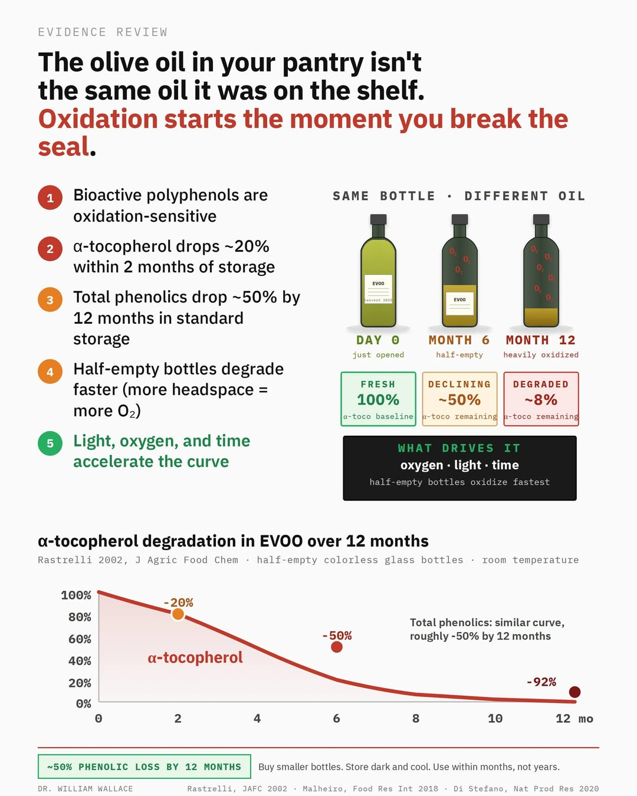

The compounds in extra virgin olive oil that distinguish it from refined olive oil degrade quickly.
Best to buy small bottles and use them within 6 weeks of opening. Store in a cool dark place. Keep the top on tight after opening. Buy extra virgin olive oils as far away from the “use by” date on the bottle as possible.
There’s no harm in using the oil after the degradation takes place. You’re just losing possible advantages over refined olive oil.
#evooHD #oliveoilHD
The bottle of olive oil in your pantry is not the same oil it was when you bought it. The oxidation chemistry begins the moment the seal is broken, and the bioactive compounds that distinguish extra virgin olive oil from generic vegetable oil decline measurably over the months that follow.
Rastrelli and colleagues (2002, Journal of Agricultural and Food Chemistry) ran a controlled storage study at the University of Salerno. Two extra virgin olive oils from Calabria were stored for one year under four conditions: dark or colorless glass bottles, filled completely or half-filled, all at room temperature. The researchers tracked α-tocopherol, polyphenols, squalene, and polyunsaturated fatty acids over the year using HPLC and GC-MS.
α-tocopherol oxidized first. By 2 months it had dropped 20 percent. By 12 months it had dropped 92 percent. The half-empty bottles showed the most pronounced changes, consistent with greater oxygen exposure per unit of oil. The pattern reflects α-tocopherol's role as a sacrificial antioxidant. It oxidizes preferentially, protecting the polyphenols and squalene during the early months of storage. Once α-tocopherol is depleted, the polyphenols become vulnerable.
Squalene and o-diphenols (the broader polyphenol fraction) were protected in the early months. They began to decline significantly only after 6 to 8 months, after the antioxidant defenses had been substantially consumed. The polyunsaturated fatty acids themselves remained stable for about 8 months and only began to oxidize once the antioxidants were largely gone.
Half-empty bottles degraded faster than full bottles. The mechanism is straightforward: more headspace means more oxygen exposure per unit of oil, accelerating the oxidation cascade. Light exposure also influenced degradation, with colorless bottles showing accelerated changes compared to dark glass.
Malheiro and colleagues (2018, Food Research International) ran a parallel storage study tracking volatile compounds and quality parameters across 12 months. Their findings reinforced the pattern. Even oils still classified as "extra virgin" by EU regulations after one year of storage had lost approximately 50 percent of phenolic compounds and 57 percent of oxidative stability. The legal classification remained but the bioactive content did not.
Di Stefano and colleagues (2020, Natural Product Research) extended the timeline to 18 months in dark glass at room temperature. Oleocanthal and oleacein (the secoiridoids that produce the characteristic peppery throat-burn of fresh extra virgin oil) decreased measurably. Tyrosol and hydroxytyrosol increased, which sounds positive until you realize they are largely the degradation products of the higher-value secoiridoids breaking down.
What this means in practice. The oil you are cooking with in October is not the oil you bought in March. The exact rate of decline depends on storage conditions, but the direction is consistent: lower α-tocopherol, lower polyphenols, lower oxidative stability over time. The bottle's label tells you nothing about the current state of the oil inside.
Three practical levers exist. First, buy smaller bottles. A 250 mL bottle finished in 6 weeks holds more bioactive content per cooked meal than a 1 L bottle finished in 6 months. Second, store the oil in a dark cool place. Dark glass and a pantry cupboard slow the curve. Heat above room temperature accelerates it (well-established food chemistry, though the specific studies above did not test temperature variation directly). Third, treat olive oil as perishable. The producer's harvest date is more informative than the "best by" date.
A few caveats worth noting. The exact rates above are from controlled laboratory storage in glass bottles at room temperature. Commercial supply chains add additional variability (transit temperature, retail display lighting, time on the shelf before purchase). Different cultivars and producing regions have different starting polyphenol concentrations, so a polyphenol-rich oil at month 12 may still exceed a polyphenol-poor oil at month 0. Storage in tin or dark green glass extends the curve but does not reverse it. The α-tocopherol data is from a single landmark study (Rastrelli 2002) and should be considered representative rather than universal.
The bigger principle. The compounds that make extra virgin olive oil functionally different from refined olive oil are oxidation-sensitive. They are why the oil is more expensive. They are also what you lose to time, oxygen, and light after the bottle is open. Treating EVOO like a stable pantry staple that lasts indefinitely is what most consumers do. The biochemistry says otherwise.
Rastrelli et al., Journal of Agricultural and Food Chemistry, 2002 Malheiro et al., Food Research International, 2018 Di Stefano et al., Natural Product Research, 2020
